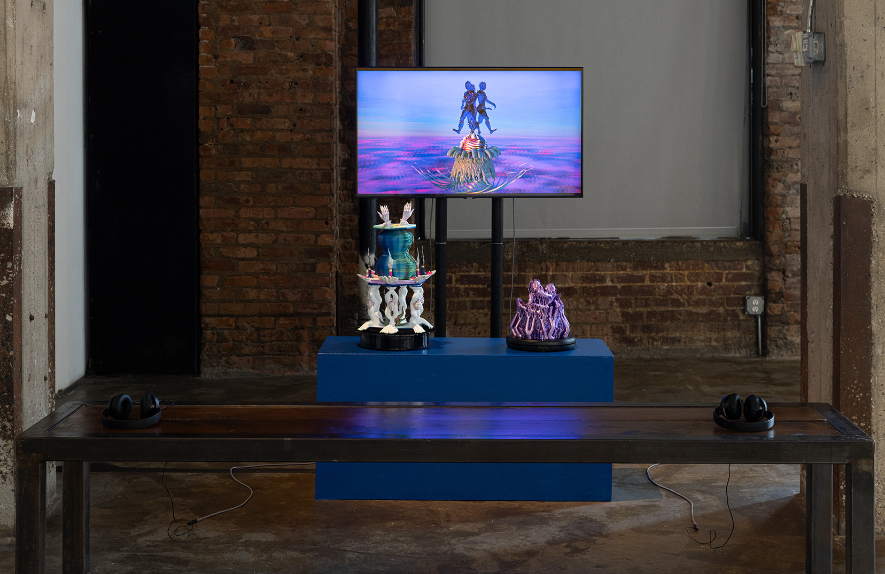
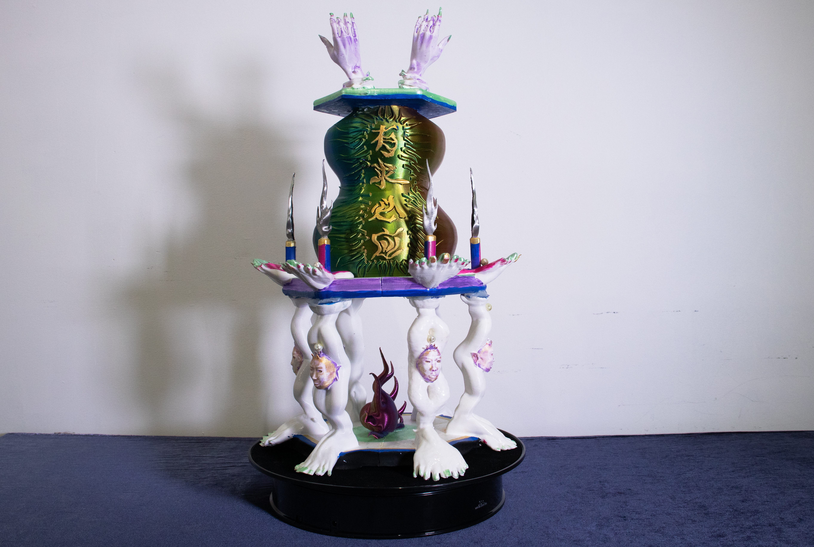

Multimedia project ReMazu: Iterations of Devotion chronicles the cyclical journeys of a deity named Mazu, a sea goddess and shaman who was first mythologized in Fujian in Southern China, later spreading to Taiwan, and Southeast Asia. Through research, writing and prototypiing, I reimagine Mazu as a contemporary queer deity, informed by the complexity of coastal diasporic identities, informed by a spiritual connection to the powers of water and a hunger for transformation.
Building and animating a digital avatar in digital-ambient environments, the process of virtual production became a body-centering experience. Reflecting on this process, the film uses iterative calling to frame Mazu as an emotional reprogramming loop. Driven by the intense desire to be seen/heard/felt/held, the act of inviting her triggers the process of remothering, to create the safety needed to shield from the vioelnt forces of colonialism and Confucianist hetero-patriarchy.
Artist
Character modeling
Animation
Concept development and Research
Fabrication: 3D printing, painting, and assembling


Accompanying the film is a set of 3d-printed ritual devices. 8th Avenue in Brooklyn, where Fujianese and other diasporic communities reside. Partially procedurally-generated and inspired by daoist ceremonial vessels, they incorporate remixes of Mazu's reconfigurable digital body.
